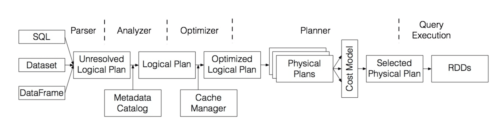

SQL Catalyst¶

Tree¶
- UnaryNode、BinaryNode、LeafNode
Rule¶
- Rule
- RuleExecutor
Parser¶
- SQL、Dataset、DataFrame -> ANTLR(词法、语法
) -> 未绑定的逻辑计划（Relation、Function、Attribute）
Analyzer¶
- Catalog、Metastore、Rule -> 数据绑定 -> 绑定的逻辑计划
- Batch(Substitution、Resolution、Nondeterministic、UDF、FixNullability、Cleanup)
Optimizer¶
- RBO（Rule-Based Optimizer）
- 组合、裁剪、下推、消除、简化、优化
Planner¶
- 策略（Strategy）
- CBO（Cost-Based Optimizer）：Shuffle、Join
Execution¶
Aggregation¶
Join¶
Tungsten¶
- Memory Management and Binary Processing
- Cache-aware computation(CPU L1/L2/L3: Cache Hit, Cache Locality)
- Code generation(Janino、WholeStageCodegen)
- No virtual function dispatches
- Intermediate data in memory vs CPU registers
- Loop unrolling and SIMD
Columnar¶
Vectorization¶
- Parquet
- ORC
- CarbonData
Codegen/Janino/JIT¶
- HashAggregate
- BroadcastHashJoin
- SortMergeJoin
- RDDScan
- DataSourceScan
- WholeStageCodegen
Hint¶
- Join
- Shuffle
Statistics¶
- Table(sizeInBytes、rowCount、hints)
- Column(distinctCount、min、max、nullCount、avgLen、maxLen、histogram)
Adapter¶
Data Source¶
- Federation
Session¶
Catalog¶
- Configuration
- View
- Function
- External Catalog